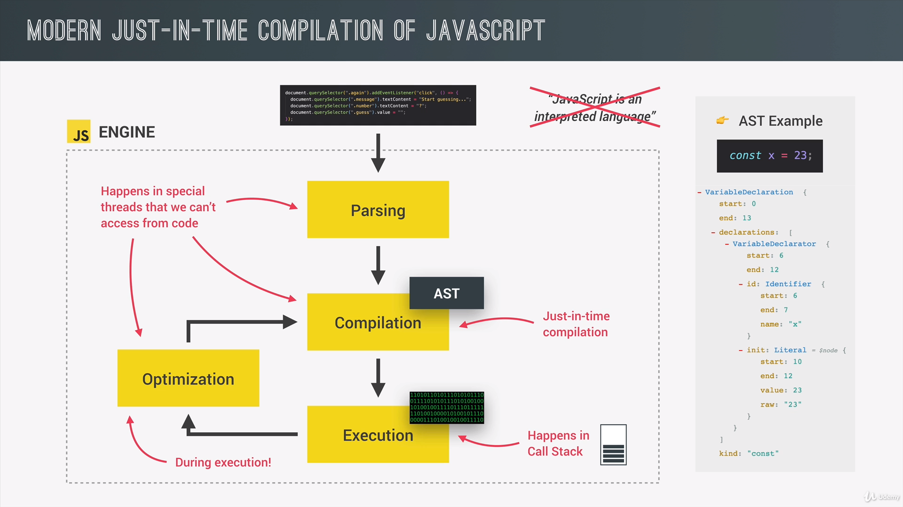
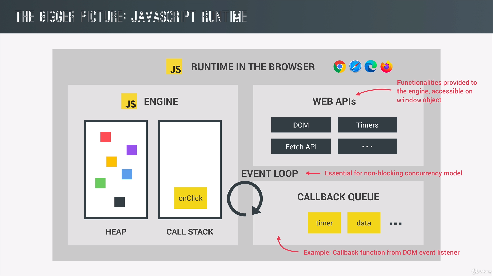
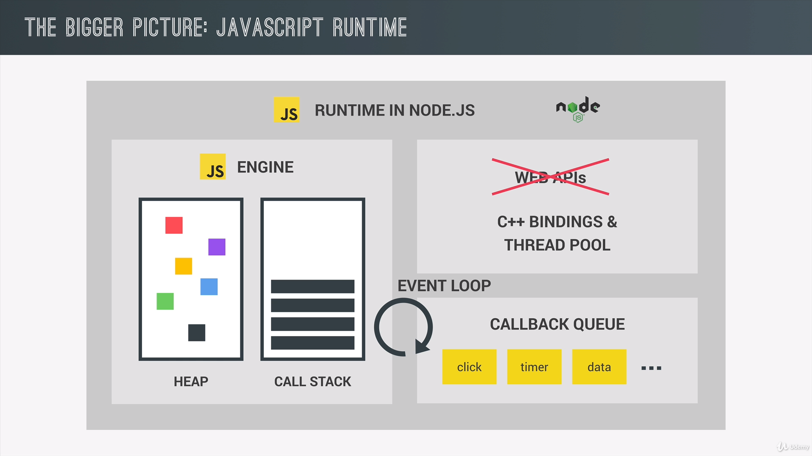
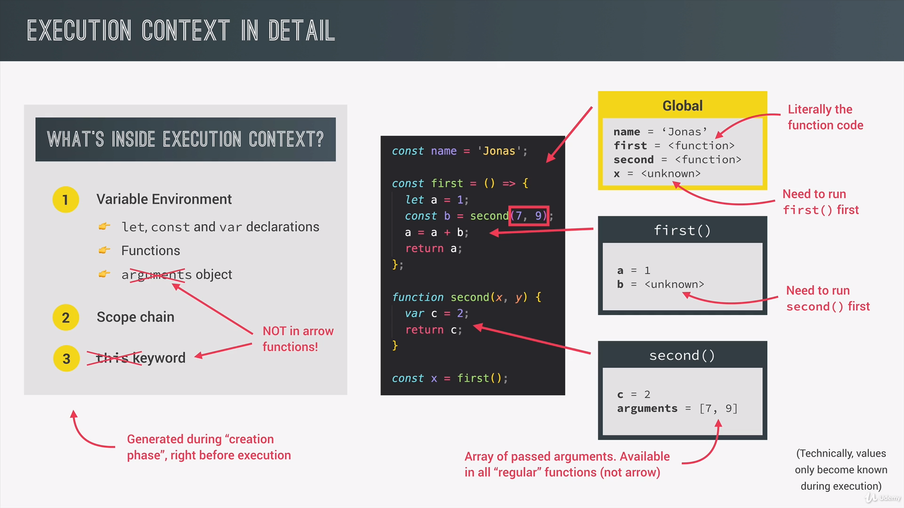
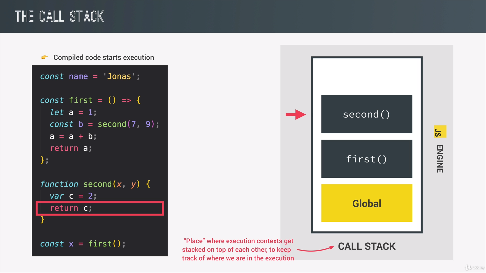

High-Level: Linguagens de alto nível não permitem que o programador controle o recurso que irá ser utilizado pelo programa.
Garbage-collected: A coleta de lixo é um algoritmo dentro do JavaScript que remove automaticamente todos os objetos que não está sendo utilizados da memória.
Interpreted or Just-in-time compiled: Dentro do JavaScript acontece a interpretação da linguagem de alto nível em linguagem de máquina. Os paradigmas podem ser classificados em Imperativos e Declativos.
Multi-Paradigm: Existem três tipos de paradigma de programação: a procedural, a orientada a objetos e a funcional.
Prototype-Based Object-Oriented: Tudo no JavaScript é um objeto, tirando os valores primitivos como: números, strings e etc. Mas os arrays são objetos também. Os Prototypes são as classes originárias, neles que ficam os métodos que depois utilizamos. Exemplo de prototypes: Array.prototype.push ou Array.prototype.indexOf. Esses métodos serão herdados por todos os arrays criados.
First-class Functions: Dizer que ela é uma linguagem com funcões de primeira classe, significa que as funções podem ser tratadas como variavéis. Nós podemos passsar funções dentro de outras funções e retorna-las de outras funções também. É esse que permite o praradigma da programação funcional na linguagem.
Dynamic: É uma linguagem ginâmica por ela é dinâmicamente tipada, ou seja, de tipagem fraca. Os tipos das variáveis são conhecidos no momento que o código está rodando.
Event Loop Concurrency Model + Single-Threaded + Non-Blocking Event Loop: O Concurrency Model (modelo de simultaneidade) significa que o JavaScriptlida com várias tarefas acontecendo ao mesmo tempo. Mas ele trabalha apenas em um thread, significando que ele pode fazer apenas uma coisa de cada vez. Então o Non-Blocking Event Loop pega uma tarefa longa e a executa em segunda plano, e dpeois a colcoa no thread principal de novo quando essa tarefa termina.
Compilation: Na compilação, todo o código é convertido em linguagem de máquina de uma vez, e escrito em um arquivo binário que pode ser executado por qualquer computador.
Interpretation: Na interpretação, existe um intérprete que percorre o código executando linha por linha. Mas o código ainda precisa ser convertido em linguagem de máquina. O JavaScript costumava ser uma linguagem de interpretação, mas esse tipo de linguagem costuma ser muito mais lenta que as linguagens compiladas.
Just-in-time (JIT) compilation: Agora o JavaScriptusa uma msitura entre compilação e interpretação, a chamada Just-in-time Compilation. O programa é executado logo em seguida que o código é transformado em linguagem de máquina, e por isso, ele não é mais portatil, não gerando um arquivo que pode ser executado em outras máquinas.
O código JS é convertido pela AST que analisará o código procurando erros e reconhecendo as variáves. Em seguida o código é convertido em linguagem de máquina (compilado) e executado instantaneamente. Só que, enquanto o código já está sendo executado pelo V8, está acontecendo vários processos de otimização e recompilação do mesmo código. Isso acontece várias vezes, o código otimzado é simplesmente trocado por uma mais otimizado ainda, sem nunca interromper a execução. Toda essa análise, compilação e otimização acontece dentro de alguns threads especiais dentro do moto que não podem ser acessados por nós pelo código. Então, essa otimização acontece fora do thread principal, que está executando a Call Stack, executando o nosso próprio código.
O Runtime acontece nos navegadores por causa da engine do JS. Mas só o motor (engine) não é o suficiente, é preciso também das WEB APIs: DOM, Timers, o Console.log(). As WEB APIs são fornecidas pela engine e não estão pela prórpia linguagem JS. O JS obtem acesso as essas WEB APIs pelo objeto global window. O JavaScript Runtime também precisa que se tenha a Callback Queue (Fila de retorno de chamadas), parque todas as funções de retorno de chamadas estejam prontas para serem executadas.
O Event Loop pega as funções do Callback Queue e as colocam no Call Stack para que elas sejam executadas. Vale lembrar que o Event Loop é essencial para o Non-blocking concurrency model.
Execução do JS nos navegadores:
Execução do JS no Node.JS:
Existe um contexto de execução global que após o código ser compilado, ele é criado e executado. Dentro desse contexto global estaram as variáveis globais e as funções. Cada função tem o seu contexto de execução, como se fosse uma caixinha com suas váriáveis e métodos.
Itens dentro de um contexto de execução: variáveis do ambiente (variáveis, funções e argumentos dos objetos); Corrente de escopo - que consistem em referências as variavéis que estão fora do contexto da função; e a palavra-chave this. Vale ressaltar que os contextos de execução das arrow functions não tem os argumentos dos objetos e a palavra-chave this. Mas elas podem usar os argumentos dos objetos e a plavra-chave this de alguma função pai sua que seja uma função regular.
O contexto de execução que está no topo é o contexto que atualmente está sendo executado, pois foi a última função que foi requistada. Enquanto isso, os outros contextos não estãos endo executados, esperando que a última função seja finalizada, trazendo ou fazendo o que é esperado dela.Isso acontece dessa maneira, uma coisa de cada vez, porque o JavaScript apenas executa em um thread. Uma detalhe é que mesmo após a função ser finalizada e tirada da Call Stack, parte de seu contexto pode continuar vivendo no memória, não sendo o contexto totalmente destruido. O contexto global apenas é finalizado quando fechamos a aba ou o navegador.
